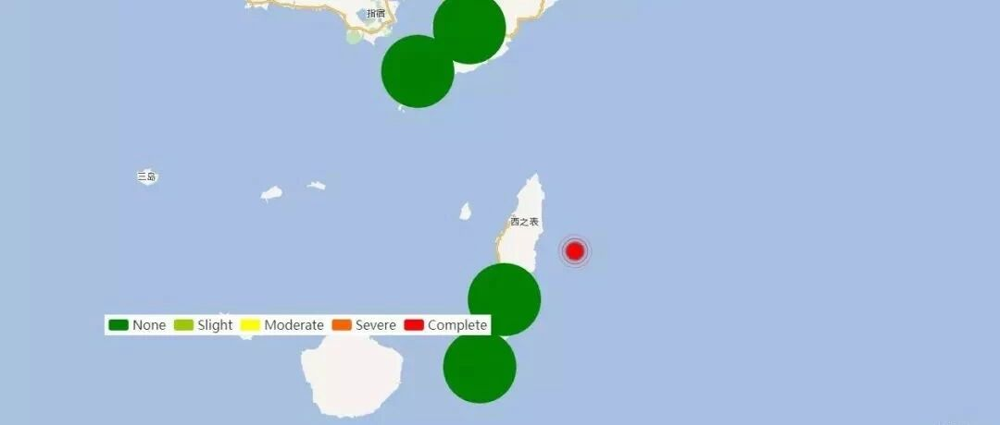

云计算助力：0108日本种子岛6.2级地震破坏力分析
将云计算用于地震破坏力分析
今天的这个报告稍微值得说一两句，因为今天的这个分析报告是在阿里云平台上完成计算的。

地震的应急存在突出的在极短时间内极大计算量需求的特点。当然最近我国遇到的地震都不是特别大，且我国近场强震台站也不是特别多，因此清华大学土木水利学院“力学计算与仿真”实验室的计算机群尚可满足需要。但是万一真的来了类似汶川那样的大地震，断层蔓延上百公里，需要分析的台站记录数以百计，那就真的面临巨大的计算压力了。
当然超级计算机是一个解决方案，但是超级计算机使用代价高昂，而大地震又不是经常来，所以这个不是一个好解决方案。而云计算的弹性服务特点就提供了一个非常好的解决办法。于是在2014年，我就带了几个本科生，搞了一个“基于云计算的工程结构地震响应数值模拟研究”SRT项目，想试试云计算用于地震应急是否可行。同学们也非常给力，结果证明这条路完全是可行的，相关工作还写了一篇论文
“基于云计算的工程结构地震响应数值模拟. 沈阳建筑大学学报（自然科学版）, 2015, 31(5): 769-777.”
该文可以在以下网址下载，或选择点击文末”阅读原文“
http://www.luxinzheng.net/publication6/Cloud_Computing_JSJZU_2015.htm

并且，学生们还做了一个很棒的小视频，介绍我们整个的想法。
本科生制作的视频，孩子们做得很不错
再次强调，这个工作我只是提供了一个idea，后面具体工作包括视频制作，都是陈磊、顾奕伟、吕晚晴、顾浩洋、孙浩涵、陈建伟他们几个本科生们完成的，并且获得了2015年清华大学挑战杯科技竞赛的奖励。
当然，这个工作是4年多以前做的一个探索性工作，后面我们团队重点放在区域震害计算模型的研发和精度提升上，这个工作就耽搁了一阵子。前一段帮助合作单位安装破坏力分析软件，遇到一些问题，于是想到是否可以把当年云计算的技术储备用上。于是在阿里云上租了一批服务器，地震了就启动这些服务器做分析，分析完就归还服务器。这样每次分析成本只要几十块钱而已，确实是一个灵活便捷便宜的解决路径。
当然，现阶段这个还是一个技术雏形，真正把这个技术用好尚需时日，但是我个人对这个方向是非常看好的。
----------------以下是报告正文------------------
致谢和声明：
感谢日本K-Net为本研究提供数据支持。本分析仅供科研使用，具体灾情和灾损分析应根据现场调查情况确定。
一、地震情况简介
据中国地震台网正式测定，2019年1月8日20时39分在日本种子岛附近海域发生6.2级地震，震源深度20千米，震中位于北纬30.64度，东经131.16度。
二、强震记录及分析
20190108日本种子岛6.2级地震获得了9组地震动，由于地震动没有完全收集，可能还有更强的记录。典型地震记录分析如下：
KGS026记录台站位置北纬30.52度，东经130.954度(图1)，记录到水平向地震动峰值加速度为75.13cm/s2，竖直向地震动峰值加速度为27.47cm/s2。该地震动如图2、图3所示。

图1 KGS026台站位置

(a) EW

(b) NS

(c) UD
图2 KGS026台站地面运动记录

图3 KGS026台站记录反应谱
利用密布强震台网在震后获取的实时地震动信息，再结合城市抗震弹塑性分析，就可以得到地震发生后不同地点的建筑破坏情况，为抗震救灾决策提供科学支撑。图4为根据 20190108日本种子岛6.2级地震震中附近范围内台站记录分析得到的建筑震害分布示意图。

图4 20190108日本种子岛6.2级地震不同台站地震记录破坏力分布图
-----------End-----------
相关研究
长按识别二维码，关注我们的科研动态